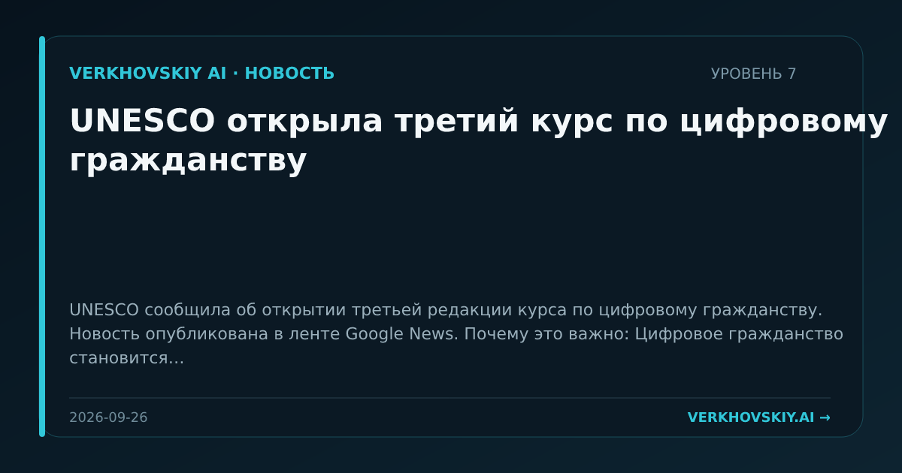

UNESCO открыла третий курс по цифровому гражданству
UNESCO сообщила об открытии третьей редакции курса по цифровому гражданству. Новость опубликована в ленте Google News. Почему это важно: Цифровое гражданство становится образовательной инфраструктурой для общества, в котором ИИ встроен в повседневные сервисы. Это формирует базовые нормы пользования, а не только профессиональные навыки.